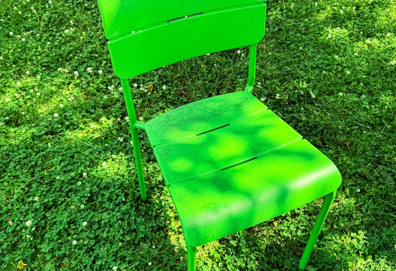
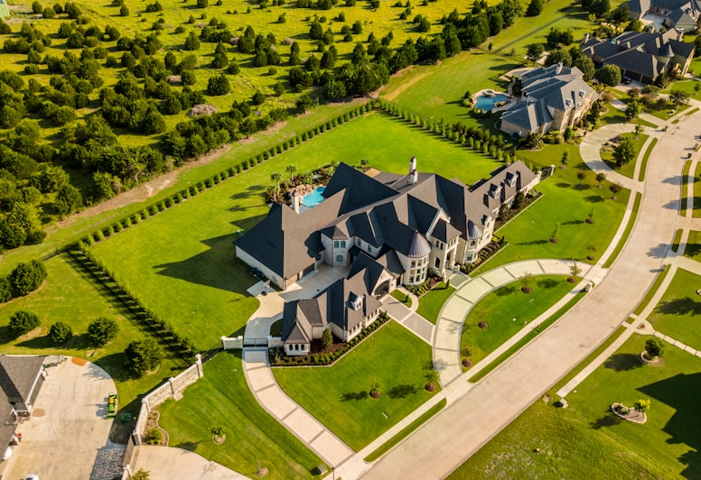
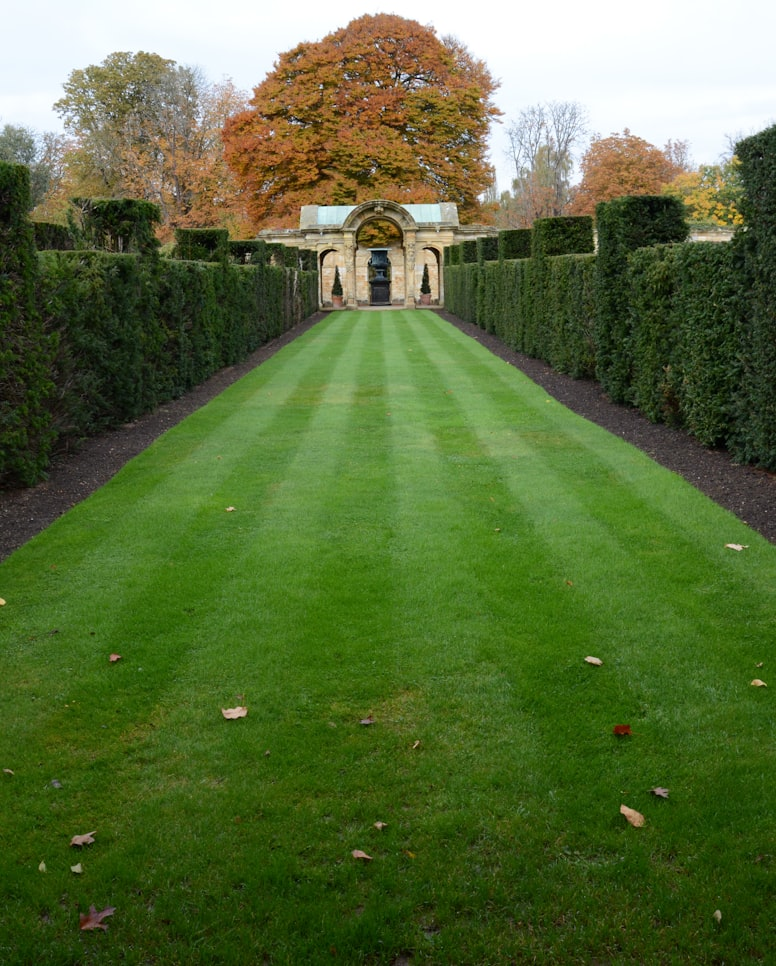
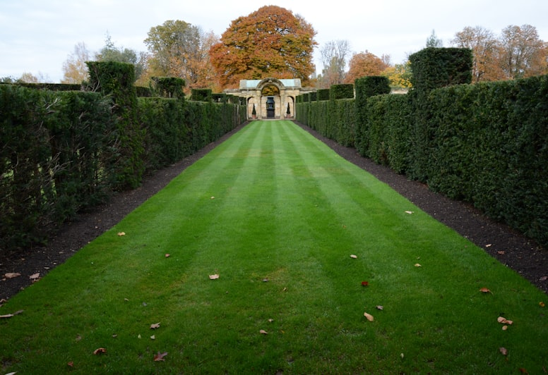
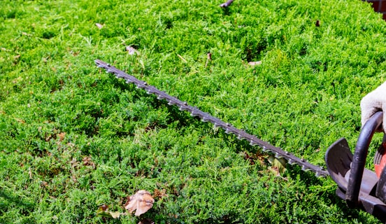
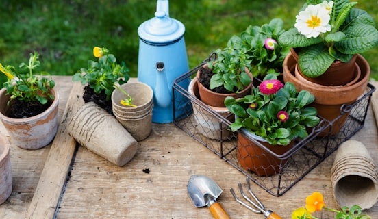
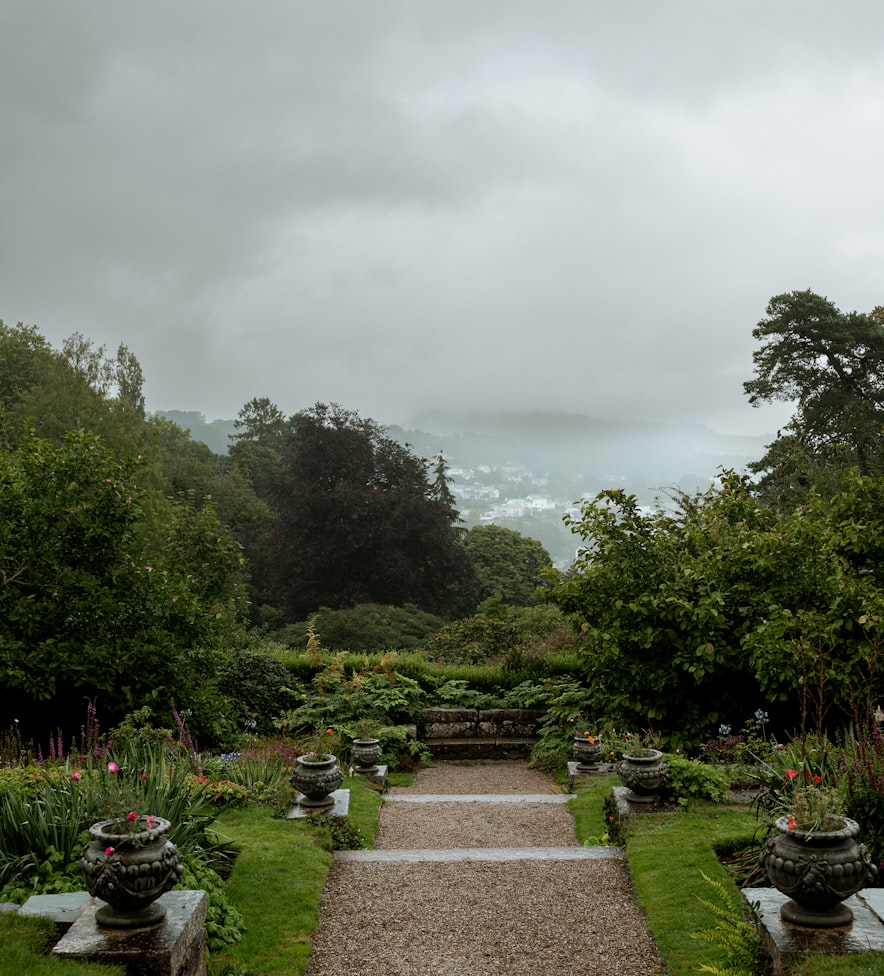
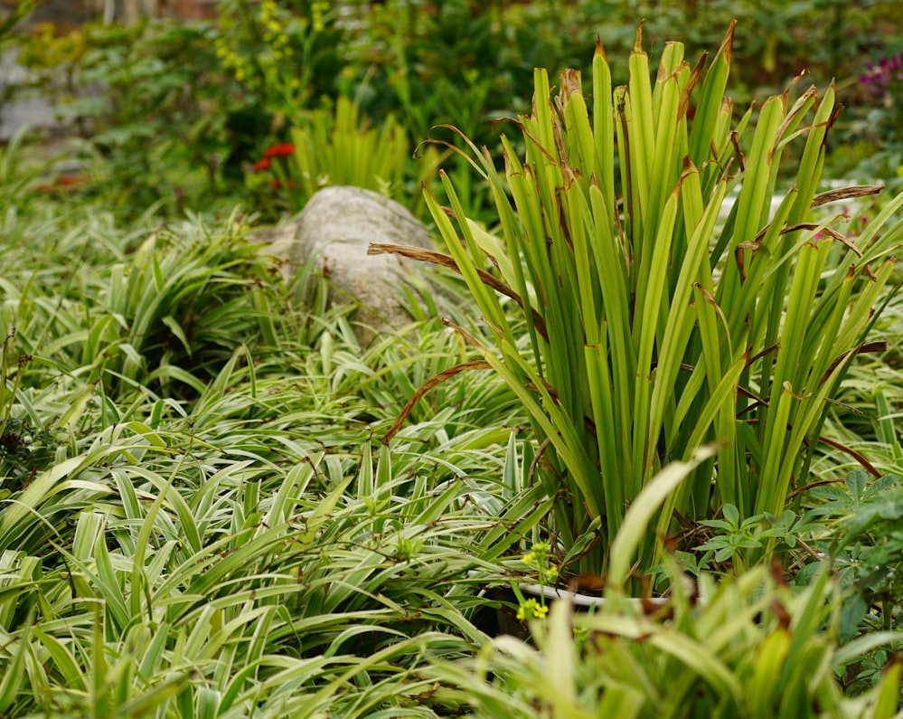

Chaque jardin raconte une histoire. Découvrez nos chantiers récents : tontes, tailles, créations paysagères et entretiens menés avec soin, partout dans la région.








Inspiré par nos réalisations ? Parlons de votre extérieur. Audit gratuit et devis détaillé sous 24 h.
Demander un devis